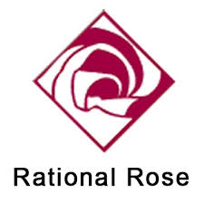

U-CASE tööriistade näidete hulka kuuluvad IBM Rational Rose ja Sparx Systems Enterprise Architect.
MICROSOFT VISUAL STUDIO: Microsoft Visual Studio on laialt levinud integreeritud arenduskeskkond (IDE), mida kasutatakse mitmesuguste tarkvaraarendusprojektide jaoks. See sisaldab laia valikut tööriistu ja funktsioone alates koodiredaktorist ja debuggerist kuni testimise automatiseerimise ja versioonihalduseni. Visual Studio võimaldab arendajatel luua erinevat tüüpi rakendusi, sealhulgas veebi-, mobiil- ja pilvetarkvara, ning toetab mitmeid programmeerimiskeeli, sealhulgas C#, JavaScript, ja Python. Lisaks pakub see integreeritud tuge erinevatele raamistikele ja platvormidele ning võimaldab arendajatel kiiresti luua ja käivitada kvaliteetseid tarkvaralahendusi.

RATIONAL ROSE: Rational Rose on üks esimesi ja tuntuimaid CASE-vahendeid, mis on loodud tarkvaraarenduse protsessi toetamiseks. See pakub terviklikku lahendust alates süsteemi analüüsist ja modelleerimisest kuni koodigeneratsiooni ja testimiseni. Rational Rose võimaldab arendajatel luua ja hallata UML-diagramme, visualiseerida süsteemi arhitektuuri ning automatiseerida mitmeid arendusetappe. Selle tööriista abil saavad arendusmeeskonnad paremini mõista süsteemi nõudeid, parandada kommunikatsiooni ja koostööd ning tagada tarkvara kvaliteet ja usaldusväärsus.

BUGZILLA: Bugzilla on veebipõhine üldotstarbeline veaotsimis- ja testimistööriist, mille töötas välja ja mida kasutas Mozilla. Selle litsents kuulub Mozilla Public License'ile. 1998. aastal Netscape Communicationsi poolt välja antud avatud lähtekoodiga tarkvara on mitmed organisatsioonid veaotsimissüsteemina kasutusele võtnud nii tasuta ja avatud lähtekoodiga tarkvarade kui omandiõigusega projektide ja toodete jaoks. Bugzillat kasutavad muuhulgas Mozilla Foundation, WebKit, Linux kernel, FreeBSD, GNOME, KDE, Apache, red Hat, Eclipse ja LibreOffice.